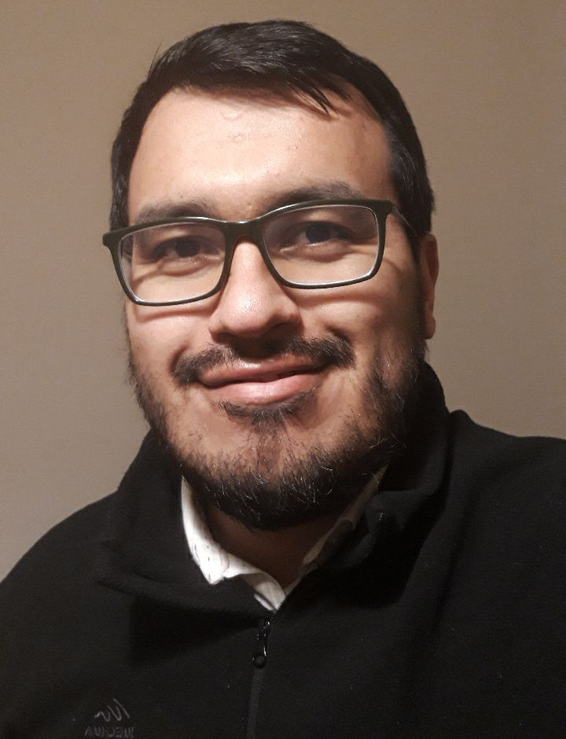

Juan S. Cely G.
juansebastian.cely@universidadeuropea.esSchool of Architecture, Engineering and Design
Villaviciosa de Odón Campus - Universidad Europea de Madrid
C/ Tajo, s/n. Urb. El Bosque 28670 Villaviciosa de Odón, Madrid, Spain

I am a Faculty Member at Industrial and Aerospace Engineering Department, Universidad Europea de Madrid.
My research interests lie on Geometric Control for robots navigation, Dynamics of Underwater and Aerial robots and Underactuated Robotics.
I completed a Ph.D. and a M.Sc. degree in Automation and Robotic at the Universidad Politécnica de Madrid, a Bachelor of Engineering degree at the Universidad Militar Nueva Granada.
I completed a Ph.D. and a M.Sc. degree in Automation and Robotic at the Universidad Politécnica de Madrid, a Bachelor of Engineering degree at the Universidad Militar Nueva Granada.
Google Scholar
/ ORCid
Refereed Conference Articles
Patents
Last Publications
Refereed Journal/Magazine Articles- J. S. Cely, R. Saltaren, G. Portilla, O. Yakrangi, y A. Rodriguez-Barroso, «Experimental and Computational Methodology for the Determination of Hydrodynamic Coefficients Based on Free Decay Test: Application to Con- ception and Control of Underwater Robots», Sensors, vol. 19, n.o 17, p. 3631, ene. 2019, doi: 10.3390/s19173631.
- J. S. Cely, M. Á. Pérez Bayas, M. Carpio, C. E. García Cena, A. Sintov, y R. Saltaren, «Control Strategy of an Underactuated Underwater Drone-Shape Robot for Grasping Tasks», Sensors, vol. 22, n.o 22, Art. n.o 22, ene. 2022, doi: 10.3390/s22228828.
- M. Á. Pérez Bayas, J. Cely, A. Sintov, C. E. García Cena, y R. Saltaren, «Method to Develop Legs for Underwater Robots: From Multibody Dynamics with Experimental Data to Mechatronic Implementation», Sensors, vol. 22, n.o 21, Art. n.o 21, ene. 2022, doi: 10.3390/s22218462.
- M. Carpio et al., «A Simulation Study of a Planar Cable-Driven Parallel Robot to Transport Supplies for Patients with Contagious Diseases in Health Care Centers», Robotics, vol. 10, n.o 4, Art. n.o 4, dic. 2021, doi: 10.3390/robotics10040111.
- G. Portilla, R. Saltarén, A. R. Barroso, J. Cely, y O. Yakrangi, «A Sensor Based on a Spherical Parallel Mechanism for the Measurement of Fluid Velocity: Experimental Development», IEEE Access, vol. 7, pp. 16145-16154, 2019, doi: 10.1109/ACCESS.2019.2892819.
- G. Portilla, R. Saltarén, F. Montero de Espinosa, A. R. Barroso, J. Cely, y O. Yakrangi, «Dynamic Walk- ing of a Legged Robot in Underwater Environments», Sensors, vol. 19, n.o 16, p. 3588, ene. 2019, doi: 10.3390/s19163588.
- A. Rodriguez-Barroso, R. Saltaren, G. A. Portilla, J. S. Cely, y O. Yakrangi, «Potential Energy Distribution of Redundant Cable-Driven Robot Applied to Compliant Grippers: Method and Computational Analysis», Sensors, vol. 19, n.o 15, p. 3403, ene. 2019, doi: 10.3390/s19153403.
- A. Rodriguez-Barroso, R. Saltaren, G. A. Portilla, J. S. Cely, y M. Carpio, «Cable-Driven Parallel Robot with Reconfigurable End Effector Controlled with a Compliant Actuator», Sensors, vol. 18, n.o 9, p. 2765, sep. 2018, doi: 10.3390/s18092765.
- R. Saltarén, G. Portilla, A. R. Barroso, y J. Cely, «A Sensor Based on a Spherical Parallel Mechanism for the Measurement of Fluid Velocity: Physical Modelling and Computational Analysis», Sensors, vol. 18, n.o 9, p. 2867, sep. 2018, doi: 10.3390/s18092867.
- O. Yakrangi et al., «An Intelligent Algorithm for Decision Making System and Control of the GEMMA Guide Paradigm Using the Fuzzy Petri Nets Approach», Electronics, vol. 10, n.o 4, Art. n.o 4, ene. 2021, doi: 10.3390/electronics10040489.
- M. A. Carpio-Alemán et al., «Collision and Tension Analysis of Cable-Driven Parallel Robot for Positioning and Orientation», en 2018 IEEE International Autumn Meeting on Power, Electronics and Computing (ROPEC), nov. 2018, pp. 1-6. doi: 10.1109/ROPEC.2018.8661464.
- A. R. Barroso, R. Saltaren, G. Portilla, J. S. Cely, y M. Carpio, «Smooth Path Planner for Dynamic Simulators Based on Cable-Driven Parallel Robots», en 2018 International Conference on Smart Systems and Technologies (SST), oct. 2018, pp. 145-150. doi: 10.1109/SST.2018.8564635.
- J. S. Cely G. y O. Rubiano, «Identificación, modelado y control de un motor DC sensado con un tacogener- ador», presentado en Second International Conference on Advanced Mechatronics, Design, and Manufacturing Technology - AMDM 2014, 2014, pp. 289-294.
- O. Rubiano, R. Castillo, C. Hurtado, y J. Cely, «Estrategia para la auto reconfiguración para el sistema robótico modular - MECABOT», presentado en Second International Conference on Advanced Mechatronics, Design, and Manufacturing Technology - AMDM 2014, 2014, pp. 109-114.
- P. R. J. Saltaren, C. C. E. Garcia, S. C. G. Juan, y F. J. M. Angosto, «Sistema de generación y transmisión de potencia mecánica para accionamiento de actuadores hidráulicos remotos», ES2884499A1, 10th December 2021. [Online]. Available on: Link
- P. R. J. Saltaren, G. J. S. Cely, B. A. Rodriguez, T. G. A. Portilla, y O. Yakrangi, «Sistema subacuatico para labores de acuicultura», ES2729816B2, 25th June 2021. [Online]. Available on: Link
Projects
- Development of a modular robot with innate response behaviors DPI2014-57220-C2-1P
- Design, construction and control of equipment for modular underwater robots S2018 / NM7-4331 RoboCity 2030-III-CM
- UNDERWATER HYBRID LEGGED ROBOT FOR RESEARCH ON KINEMATICS, DYNAMICS AND CONTROL DURING THE LOCOMOTION ON THE SEABED - LEGSUB PGC2018-095939-B-I00
- Study of Human Integration through sensor integration (Force - EMG - Artificial Vision - Brain Interface Computer)
Education
- 2017– 2022:
Ph.D. in Automation and Robotics, CAR UPM-CSIC, Universidad Politecnica de Madrid, Spain
Doctoral thesis: "Control of an underactuated underwater robot using geometric algebra"
Grade: SOBRESALIENTE CUM LAUDE
- 2016–2017:
M.Sc. in Automation and Robotics, CAR UPM-CSIC, Universidad Politecnica de Madrid, Spain
Master thesis: "Design and Implementation of the Internal architecture of an modular robot for underwater grasping tasks."
Courses: Dynamic and Control of Robots, Robots Kinematics, Design of Robots, Guided and Navigation of Robots.
- 2008–2015:
B. Eng. in Mechatronics Engineering, Davinci Research Group, Universidad Militar Nueva Granada, Colombia
Thesis: "Design and Simulation of a self balancing mobile platform for the transport of an average person."
Courses: Mechatronics Systems Models, Linear Control, Robotics, Advanced Topics of Control, Mechatronic Design, Artificial Intelligence.
Code
- GRMI LegSub CAN Module: A ROS package to manage the communication between motors using CAN BUS.
- UDrobot: Mobile Underwater Robot (MUR): Differents packages for simulation and control a Modular Underwater Robot design by Robotics and Intelligent Machines Research Group.
- GRMI_underwater_drone: A modular, fully and light library for connecting GRMI's robots to internet using AWS (Amazon Web Service), typed in Python and Arduino.
Talks, Shows & Tutorials
- PGC2018-095939-B-I00 Final Test, Center for Automation and Robotics UPM-CSIC, 2022.
- Mobile Robotic Platform with Remote Control Using AWS, Center for Automation and Robotics UPM-CSIC, 2017.
- Position control of Brushless Motor, Center for Automation and Robotics UPM-CSIC, 2017.
- GEAR REDUCTION FOR MOTOR Underwater prototype, Center for Automation and Robotics UPM-CSIC, 2017.
May the force be with you . . .